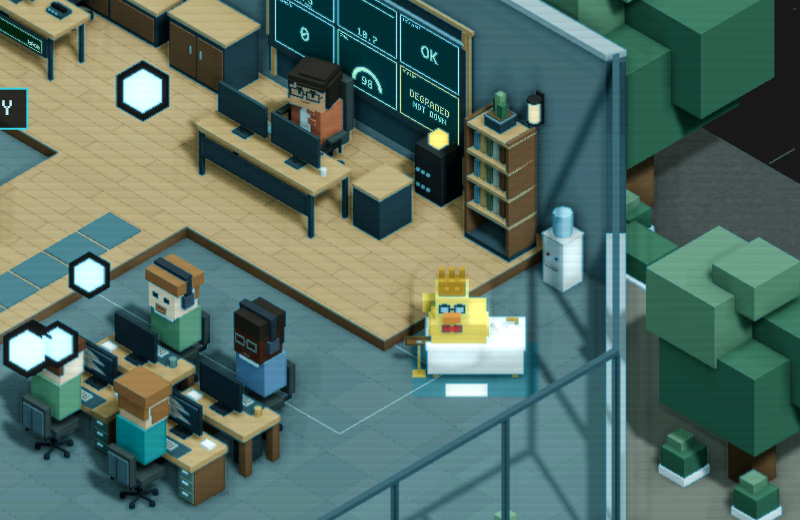
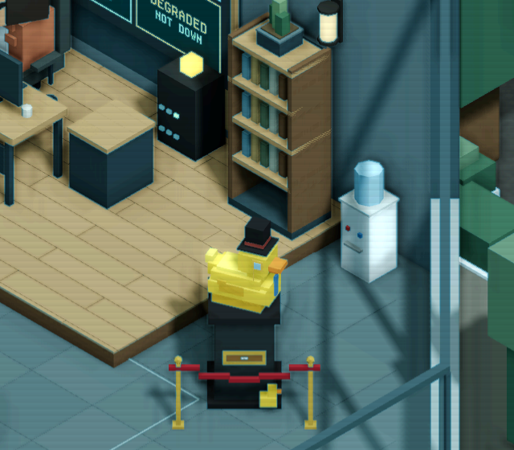
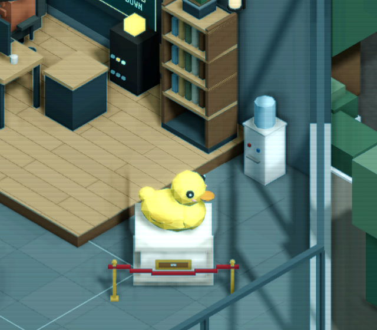

No podium. This round is about him: one voxel duck good enough to be the game's motif and its app icon. Every picture on this page is drawn live from the same voxel models, so what you pick here is the model that goes into the game, the icon and his window.
On a phone he is 60 px, in a browser tab 32. The shape has to read as a duck when it's a black blob, so each icon below has a silhouette test.
Unit cubes only, built from blocks with their edges cut back one step at a time. Flat faces, no curves. That's the room's own look and the reason the last three ducks felt off.
A plain rubber duck could be anybody's. Each icon adds one thing that makes it this game: a bug, the monitor, a hundred million ducks, a job title.



Same yellow, same beak, four sets of proportions. Drag any of them to turn him round.
And four faces on the big-head body. The face carries the character, so it's worth choosing on purpose.
Drag or use the arrow keys to turn · the icons below use the big-head body
Each card shows the icon at 512 px, then at its real sizes (phone 60, Android launcher 48, browser tab 32) and a 48 px silhouette. Check the small ones: that's where an icon wins or loses.
Where real rubber ducks sit. If you pick the monitor icon, the game and the icon tell the same joke. It's small at room zoom, which is fine for a CTO who does nothing.
He sits on the desk of whoever is fixing the worst bug and waddles to the next one. He becomes the thing you watch, which a motif should be.
A desk duck in the garage, a giant inflatable duck in the courtyard by the office, a duck on the roof of the building, a duck-shaped moon at the galaxy. One motif from the garage to the stars. My pick.
Reply with a body (A), a face, and an icon (B), or a mix, for example "big head, glint eyes, bug hunter icon with the coral close-up as the store banner".
Nothing in the game has changed yet. Once you pick, that model goes into the room, his window's portrait and the app icon files, and the old ducks and seats are deleted.